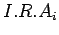

La presente metodología pretende valorar cuantitativamente mediante índices ambientales los siguientes aspectos para cada vertedero:
Bajo esta filosofía, se pretende valorar la interacción medio - vertedero mediante el Índice de Interacción Medio - Vertedero (I.M.V)2.1. Este índice evalúa de forma conjunta las diferentes afecciones a cada elemento del medio, con el objetivo de ser representativo del estado ambiental existente entre la interacción del punto de vertido y el entorno ambiental. Su expresión matemática responde al algoritmo 2.1.
En esta expresión:
(i) hace referencia a cada uno de los elementos del medio: aguas superficiales, aguas subterráneas, atmósfera, suelo y salud.
 es el Índice de Riesgo de Afección Ambiental para cada uno de los elementos del medio (i).
A continuación se va a desarrollar el Índice de Riesgo de Afección Ambiental.